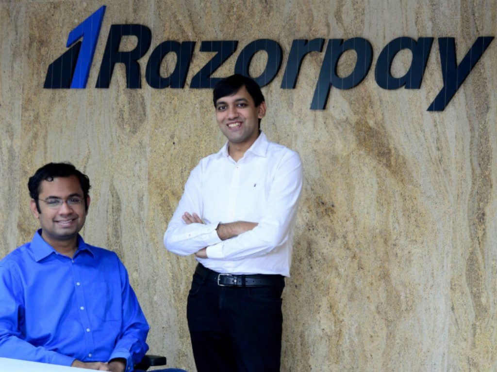

Razorpay Raises $160 Mn Funding At $3 Bn Valuation; Eyes Southeast Asia Expansion

Harshit Rakheja
Inc42 Staff
19 Apr'21 . 3 min read
Share story
- The new funding comes as the company plans to launch its products in Southeast Asian markets by the end of this year
- The round has been led by Singapore’s sovereign wealth fund GIC and Sequoia Capital India
- Founded by Shashank Kumar and Harshil Mathur in 2014 as a payment gateway service, the six-year-old startup provides payments and other financial infrastructure to help businesses manage money flow

Indian fintech unicorn Razorpay has raised $160 Mn in its Series E funding round at a valuation of around $3 Bn, 3X its earlier valuation of $1 Bn. The company raised its $100 Mn Series D funding round in October last year, which catapulted it to unicorn status.
The new funding comes as the company plans to launch its products in Southeast Asian markets by the end of this year. The round has been led by Singapore’s sovereign wealth fund GIC and Sequoia Capital India. Other existing investors such as Ribbit Capital also participated in the new round. With the recent funding, the startup has, to date, raised $366.5 Mn.
Founded by Shashank Kumar and Harshil Mathur in 2014 as a payment gateway service, the six-year-old startup provides payments and other financial infrastructure to help businesses manage money flow. Its core business continues to be its online payment gateway, which accounts for 80% of its revenue, as it serves five million customers. Some of its clients include Facebook, BookMyShow, Airtel, Ola, Swiggy and Cred.
Speaking about the company’s plans, CEO and cofounder Harshil Mathur said, “We at Razorpay want to be the one-stop financial platform that a business needs to simplify and manage their end-to-end money movement. Our recent initiatives in the banking and lending space through RazorpayX & Capital have helped businesses solve some very unique challenges around managing money, empowering businesses to grow up to 10X in spite of an economically difficult year.”
Last year, Razorpay became the fifth Indian fintech firm to achieve ‘unicorn’ status after online payment gateway BillDesk, Flipkart-owned PhonePe, insurtech startup PolicyBazaar, and mobile payment and commerce platform Paytm. This year, more fintech startups, namely Digit Insurance, Cred and Groww have entered the coveted club, as India has minted nine more unicorn startups so far this year.
The company has claimed that RazorpayX helps over 15,000 Indian businesses to manage their money. The neobank saw 400% growth in transaction volume in the last 12 months of Covid. The company will divert a portion of the new funds towards RazorpayX to develop new products on the technology stack.
The company’s cofounder and CTO Shashank Kumar said the company would look to introduce new products in the next 12 months through strategic partnerships and acquisitions. In the past, the company has acquired payroll management company Opfin and Thirdwatch, an artificial intelligence (AI) driven company specialising in big data and machine learning for real-time fraud prevention.